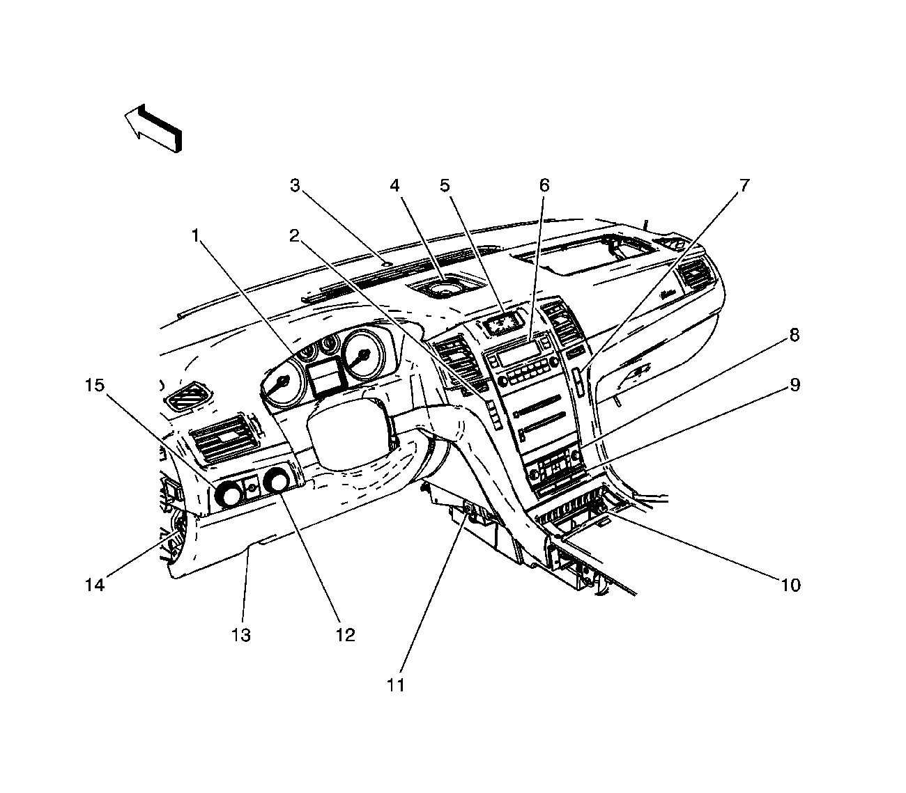

Front of the I/P (Z75)
Front of the I/P (Z75)

(1)Instrument Panel Cluster (IPC)
(2)Driver Information Center (DIC) Switch
(3)Ambient Light/Sunload Sensor Assembly (CJ2)
(4)Speaker- Center
(5)Analog Clock
(6)Radio
(7)Traction Control / Rear Object Detection Switch
(8)HVAC Control Module
(9)I/P Multifunction Switch Assembly
(10)Auxiliary Power Outlet- Front 1
(11)Noise Compensation Microphone (UQA w/Y91 all w/UQS)
(12)Transfer Case Shift Control Switch (NP8)
(13)Fuse Block- I/P
(14)Headlamp and Panel Dimmer Switch